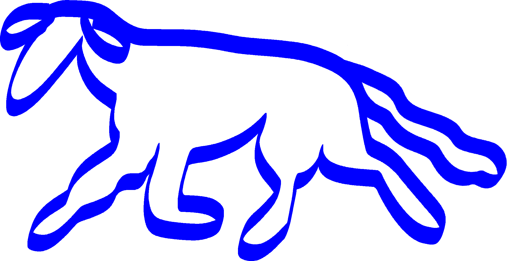
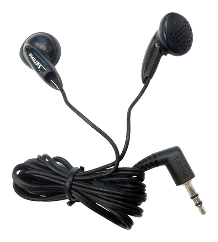
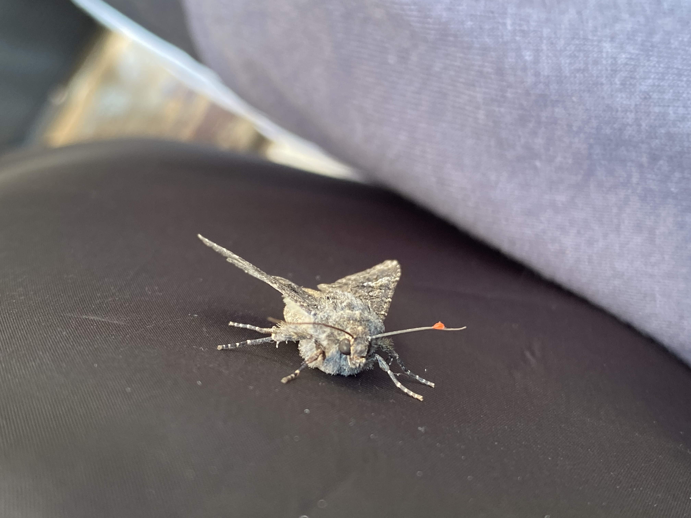

Magnesia Nova
 Merzbow
Merzbow
Merzbow
personal archive • 2026

A publicly accessible personal archive. A place where I leave fragments of myself, without trying to piece them together into a coherent story. There is no desire here for completeness or clarity. This is not a biography, nor is it a narrative with a beginning and an end. Thoughts, moods, tastes, contradictions.
I appreciate silence. The sound of people talking makes me anxious. But noise (like harsh noise) helps me stop thinking and calm down.
For a long time, music didn’t mean much to me. As a child, it seemed like a nuisance that annoyed me. When I started listening to music intentionally, it felt more awkward than natural. I didn’t have my own musical tastes; I listened to whatever was available—whatever I heard from friends or found online. But over time, sound became essential to me. Now I’d call myself a music lover, but that word isn’t quite accurate. I can listen to any kind of music—my playlists are very diverse—but I have a clear preference for certain genres, and it’s not random.

Headphones-liners Philips SHE1350/00
The starting point was around 2021, when I started listening to breakcore. It was aggressive, raw, and overloaded music, but there was something alive in it that drew me to it. Gradually, my interest deepened. I moved from more accessible stuff to still-popular subgenres, like lolicore. Artists like loli in early 20s, goreshit, and the like became the next stage. There, the sound became even more fragmented, emotionally intense, and strange.
Then I started moving toward an even more experimental electronic scene. Squarepusher, Venetian Snares—especially the album “Songs About My Cats” with the track “Chinaski”—became an important part of this transition. In their work, you could already sense complete chaos, but also structure and complexity.
Alongside my interest in experimental film, I discovered noise music. Merzbow was one of the first artists I encountered. It was a whole new level of experience. No rhythmic melodies, just pure sound texture. Harsh noise doesn’t overwhelm; on the contrary, it clears the mind. There’s no familiar logic to it, and that’s exactly why it helps me stop the flow of thoughts.
Merzbow
The further I moved away from my usual, superficial perceptions, the deeper I delved into my own inner self. I tend to isolate myself. Solitude wasn’t really a problem for me; rather, it was a natural state that I had simply grown accustomed to—or one in which I simply wanted to be. I often went off to play in the woods alone as a child; I had some strange habits, but I think that partly instilled in me a love for animals. I don’t feel afraid of dogs, and this feeling hasn’t come and gone. It’s simply always been a part of me, and I like that. Once, a stray dog started gnawing and biting at my pant leg; I didn’t react, and the dog just walked away. I like cats and dogs, caterpillars and hawk moths, and all sorts of living creatures in general. There is a special beauty in them simply by virtue of their existence in the world.

Noctuidae • June 28, 2024
This largely shapes my attitude toward people (not everyone, of course) and toward what’s happening around me. I hate hate. This isn’t an emotional exaggeration, but a rather clear feeling. I dislike ideas based on division, superiority, and aggression. Nazism, racism, xenophobia, justifying violence, romanticizing war, justifying murder, and so on. It’s especially strange to watch how such things spread among children and teenagers through memes, influencers, and jokes that gradually cease to be just jokes, while the people afflicted by this scourge don’t even realize it.
To me, hatred seems like one of the most artificial things people constantly try to justify or conceal. It rarely arises on its own, and it doesn’t come out of nowhere—this is an obvious truth that goes without saying. It is created, amplified, and turned into a habit.
I don’t just dislike this destructive emotion—I despise it. It turns people into empty shells, stealing their joy, empathy, and the ability to see another person as a human being. Pacifism is not weakness or “naive goodness”; it is a conscious choice to refuse to participate in the cycle of malice. To eradicate anger.
I don’t want my life or my words to push anyone toward violence, even indirectly. The world is already full of pain—why multiply it?
I see how Nazism and mutual hatred are quietly seeping into teenagers’ minds through what people like to call “ironic” content. One click—and there’s a “funny” meme with a swastika, a “joke” about “racial purity” that actually teaches people to hate “outsiders” quite clearly. People use humor to mask real hostility, and it’s disgusting. Even if at first it might seem like something truly harmless, sooner or later it comes to the point where this person gets upset that “you can’t even give a proper Nazi salute on the internet these days.” And people—or simply impressionable minds who haven’t yet learned to filter out the poison—absorb this as the norm. Then it escalates into actual words, then into actions (for example, in the 2025–2026 school year alone, 18 armed attacks on educational institutions were recorded in Russia. Moreover, according to the Ministry of Internal Affairs, 13 such attacks occurred between January and April 2026 alone.) against those whom they deem weak or simply unworthy of life. I believe that any form of promoting Nazism is a crime against the future and an excuse for crimes against humanity. Because Nazism did not die in 1945; it simply changed form.
It all follows a chain: racism, xenophobia, war, murder, violence. These are all different facets of the same problem. When you start dividing people into “us” and “them” based on skin color, nationality, religion, or simply where they come from—you’ve already opened the door to evil.
And here I come to what has become a personal example of anti-hatred for me: the color blue in my website’s design. I used to just can’t stand it. It seemed “not my thing” to me. But over time, I started experimenting: pairing blue with warm shades—orange, yellow, burgundy. And suddenly I noticed how it came to life, how it added depth and calm.
Gradually, blue stopped being “that one color I don’t like” and became one of the strongest and most beautiful in my palette. It now symbolizes for me precisely this anti-hatred: I don’t reject what initially repelled me, but give it a chance to reveal itself in a new way. It’s a small but very personal act of overcoming prejudice.
Blue is the rejection of hatred.
All colors are beautiful. Absolutely all of them. There are no “right” or “wrong” colors, no “masculine” or “feminine” colors. Red, green, yellow, purple, black, white. Every color is unique in its own way, and when you start combining them, something incredible is born. Their combinations show just how much richer the world is when you don’t limit yourself with silly, contrived boundaries.
Take the color cyan, for example. Right now, I don’t really like it either, just as I once disliked blue. It seems too light and somehow bland to me. But I know for sure: in time, I’ll be able to love it too. Just like I came to love blue. I just need to give it a chance, look at it in new combinations—with dark blue, with gold, with gray. And it will reveal itself too.
And the reason why I didn’t like either blue or light blue before is completely absurd: since childhood, they’ve been pushed on us as “colors for boys.” All this gender nonsense—it drives me crazy. Who decided that pink is for girls and blue is for boys? Who came up with the idea that a color can determine who you’re supposed to be? It’s the same hatred, just on a smaller scale: dividing the world into “right” and “wrong” based on a completely ridiculous criterion.
I find this fundamentally wrong. People should be free to choose what they like, regardless of whether it’s “masculine” or “feminine.” Colors have no gender. Neither do emotions, interests, or dreams. This whole gender thing is an artificial framework that only limits us and sows that very same petty hatred from childhood onward. There’s nothing wrong with a boy playing with a pink doll if he likes it and isn’t doing anything wrong, and there’s nothing wrong with a girl playing with a blue toy car. I’m against such restrictions. Completely.
That’s why my blue website isn’t just a design. It’s a manifesto through which I’m learning to love. I choose expansion, not narrowing. I choose freedom. I choose anti-hatred in everything—from big things like war and Nazism to small things like the color on a screen.
All colors are beautiful. And all people can be beautiful too, if we don’t let hatred spoil them.

Marumba quercus male, commons.wikimedia.org
To me, contrast is more than just a combination of colors. It’s the deep darkness and the vibrant warmth of greenery. The soft, velvety tones of wings and the sharp yet delicate pinkish-red.
Contrast creates tension and harmony at the same time.
Darkness is not merely a backdrop; it highlights life. Greenery is not merely a decoration; it pulsates on the edge of blackness. Light-colored wings do not disappear into the darkness, but gain depth precisely because of it. Contrast is not a mere embellishment, but a necessary condition for the existence of beauty and art itself. Without one side, the other loses its meaning and power.
I believe contrast is one of the most important things—both in art and in life itself. It manifests itself in the clear boundaries between the closed and the open, between silence and a scream, between tranquility and chaos.
Without evil, it is impossible to truly understand and appreciate good. Without hatred, we would not be able to fully appreciate the value of love and acceptance. Without darkness, light remains flat and expressionless. Contrast is what gives the world depth and dimension. It prevents reality from becoming monotonous.
And perhaps that is precisely why I do not try to eliminate the dark side entirely. I do not want to make the world flat and sterile. Not because I believe a world without evil would be boring. Contrast does not exist to justify evil, but to help us see its boundaries and avoid becoming part of it. To see the difference between noise that cleanses and noise that destroys. Between solitude that brings peace and isolation that breaks you. Between a living being you can reach out to and a person who has lost the ability to feel.
If there were no death, the sense of time would vanish. If there were no pain, the value of peace would vanish. If there were no evil, good would cease to be a choice, and good itself would lose its value, becoming what evil once was. If there were no silence, noise would lose its form. If there were no noise, silence would cease to be something tangible and necessary. Everything exists only because it has an opposite.
Contrast is not conflict for conflict’s sake, but a way of coexisting. It is what makes any feeling real, rather than a simulation. Only in this way can one feel true love, admiration, peace, and happiness. It is what allows us to distinguish acceptance from indifference, and freedom from confinement.
You don’t have to reduce everything to a single thing. What matters is that there is something at all. There’s little worse than emptiness.
One phenomenon gains meaning through another.